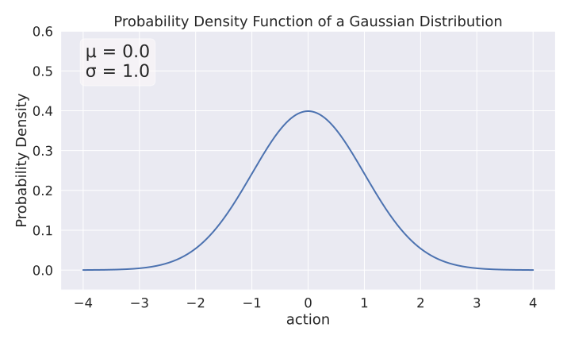
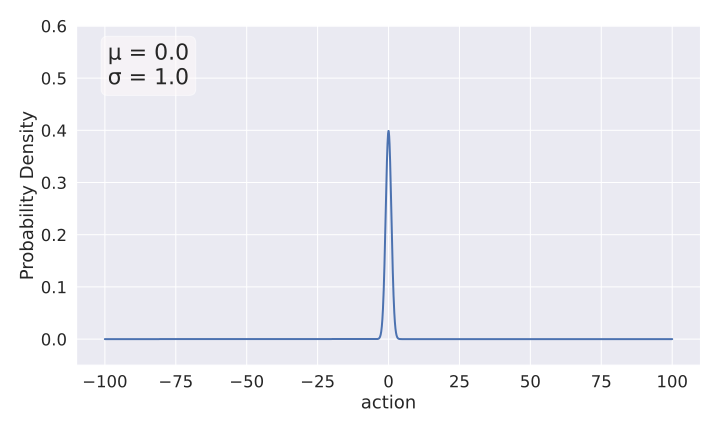
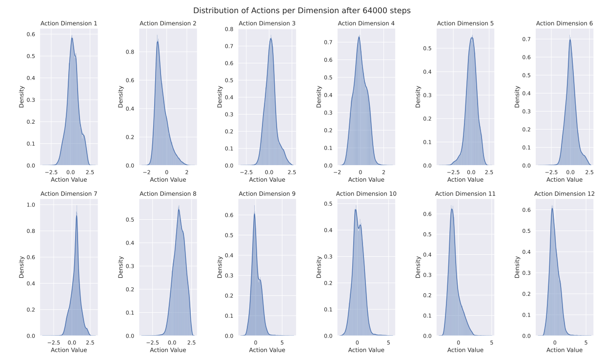
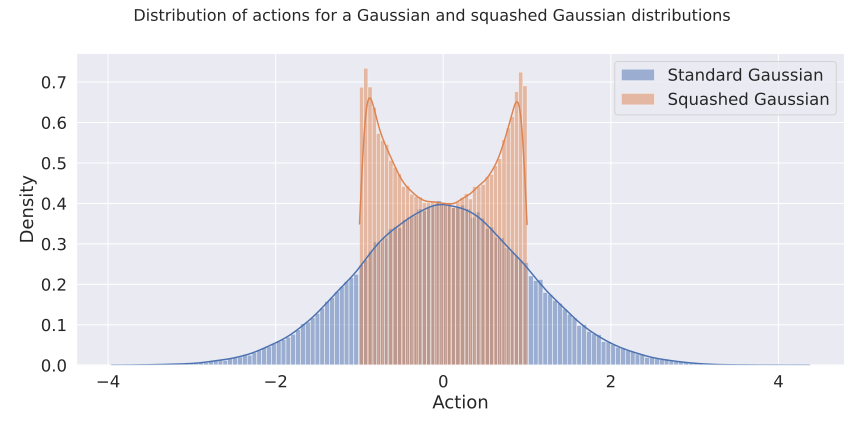
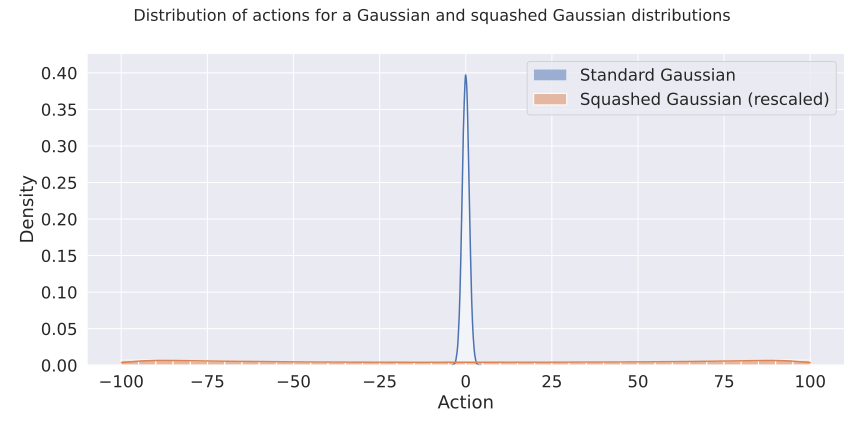

Getting SAC to Work on a Massive Parallel Simulator: An RL Journey With Off-Policy Algorithms (Part I)

This post details how I managed to get the Soft-Actor Critic (SAC) and other off-policy reinforcement learning algorithms to work on massively parallel simulators (think Isaac Sim with thousands of robots simulated in parallel). If you follow the journey, you will learn about overlooked details in task design and algorithm implementation that can have a big impact on performance.
Spoiler alert: quite a few papers/code are affected by the problem described below.
- Part I is about identifying the problem and trying out quick fixes on SAC.
- Part II (WIP) will be about tuning SAC for speed and making it work as good as PPO.
A Suspicious Trend: PPO, PPO, PPO, …
The story begins a few months ago when I saw another paper using the same recipe for learning locomotion: train a PPO agent in simulation using thousands of environments in parallel and domain randomization, then deploy it on the real robot. This recipe has become the standard since 2021, when ETH Zurich and NVIDIA1 showed that it was possible to learn locomotion in minutes on a single workstation. The codebase and the simulator (called Isaac Gym at that time) that were published became the basis for much follow-up work2.
As an RL researcher focused on learning directly on real robots, I was curious and suspicious about one aspect of this trend: why is no one trying an algorithm other than PPO?3 PPO benefits from fast and parallel environments4, but PPO is not the only deep reinforcement learning (DRL) algorithm for continuous control tasks and there are alternatives like SAC or TQC that can lead to better performance5.
So I decided to investigate why these off-policy algorithms are not used by practitioners, and maybe why they don’t work with massively parallel simulators.
Why It Matters? - Fine Tuning on Real Robots
If we could make SAC work with these simulators, then it would be possible to train in simulation and fine-tune on the real robot using the same algorithm (PPO is too sample-inefficient to train on a single robot) .
By using other algorithms it might also be possible to get better performance. Finally, it is always good to have a better understanding of what works or not and why. As researchers, we tend to publish only positive results, but I think a lot of valuable insights are lost in our unpublished failures.

The DLR bert elastic quadruped
(The Path of Least Resistance) Hypothesis
Before digging any further, I had some hypotheses as to why PPO was the only algorithm used:
- PPO is fast to train (in terms of computation time) and was tuned for the massively parallel environment.
- As researchers, we tend to take the path of least resistance and build on proven solutions (the original training code is open source and the simulator is freely available) to get new interesting results6.
- There may be some peculiarities in the environment design that favor PPO over algorithms. In other words, the massively parallel environments might be optimized for PPO.
- SAC/TQC and derivatives are tuned for sample efficiency, not fast wall clock time. In the case of massively parallel simulation, what matters is how long it takes to train, not how many samples are used. They probably need to be tuned/adjusted for this new setting.
Note: during my journey, I will (obviously) be using Stable-Baselines3 and its fast Jax version SBX.
The Hunt Begins
There are now many massively parallel simulators available (Isaac Sim, Brax, MJX, Genesis, …), here, I chose to focus on Isaac Sim because it was one of the first and is probably the most influential one.
As with any RL problem, starting simple is the key to success.
A PPO agent trained on the Isaac-Velocity-Flat-Unitree-A1-v0 locomotion task.
Green arrow is the desired velocity, blue arrow represents the current velocity
Therefore, I decided to focus on the Isaac-Velocity-Flat-Unitree-A1-v0 locomotion task first, because it is simple but representative.
The goal is to learn a policy that can move the Unitree A1 quadruped in any direction on a flat ground, following a commanded velocity (the same way you would control a robot with a joystick).
The agent receives information about its current task as input (joint positions, velocities, desired velocity, …) and outputs desired joint positions (12D vector, 3 joints per leg).
The robot is rewarded for following the correct desired velocity (linear and angular) and for other secondary tasks (feet air time, smooth control, …).
An episode ends when the robot falls over and is timed out (
truncation) after 1000 steps7.
After some quick optimizations (SB3 now runs 4x faster, at 60 000 fps for 2048 envs with PPO), I did some sanity checks. First, I ran PPO with the tuned hyperparameters found in the repo, and it was able to quickly solve the task. In 5 minutes, it gets an average episode return of ~30 (above an episode return of 15, the task is almost solved). Then I tried SAC and TQC, with default hyperparameters (and observation normalization), and, as expected, it didn’t work. No matter how long it was training, there was no sign of improvement.
Looking at the simulation GUI, something struck me: the robots were making very large random movements. Something was wrong.
SAC out of the box on Isaac Sim during training.
Because of the very large movements, my suspicion was towards what action the robot is allowed to do. Looking at the code, the RL agent commands a (scaled) delta with respect to a default joint position:
# Note desired_joint_pos is of dimension 12 (3 joints per leg)
desired_joint_pos = default_joint_pos + scale * action
Then, let’s look at the action space itself (I’m using ipdb to have an interactive debugger):
import ipdb; ipdb.set_trace()
>> vec_env.action_space
Box(-100.0, 100.0, (12,), float32)
Ah ah! The action space defines continuous actions of dimension 12 (nothing wrong here), but the limits $[-100, 100]$ are surprisingly large, e.g., it allows a delta of +/- 1432 deg!! in joint angle when scale=0.25, like for the Unitree A1 robot. To understand why normalizing the action space matters (usually a bounded space in $[-1, 1]$), we need to dig deeper into how PPO works.
PPO Gaussian Distribution
Like many RL algorithms, PPO relies on a probability distribution to select actions. During training, at each timestep, it samples an action $a_t \sim N(\mu_\theta(s_t), \sigma^2)$ from a Gaussian distribution in the case of continuous actions8. The mean of the Gaussian $\mu_\theta(s_t)$ is the output of the actor neural network (with parameters $\theta$) and the standard deviation is a learnable parameter $\sigma$, usually initialized with $\sigma_0 = 1.0$.
This means that at the beginning of training, most of the sampled actions will be in $[-3, 3]$ (from the Three Sigma Rule):
The initial Gaussian distribution used by PPO for sampling actions.
Back to our original topic, because of the way $\sigma$ is initialized, if the action space has large bounds (upper/lower bounds » 1), PPO will almost never sample actions near the limits. In practice, the actions taken by PPO will even be far away from them. Now, let’s compare the initial PPO action distribution with the Unitree A1 action space:
The same initial Gaussian distribution but with the perspective of the Unitree A1 action space $[-100, 100]$
For reference, we can plot the action distribution of PPO after training9:
Distribution of actions for PPO after training (on 64 000 steps).
The min/max values per dimension:
>> actions.min(axis=0)
array([-3.6, -2.5, -3.1, -1.8, -4.5, -4.2, -4. , -3.9, -2.8, -2.8, -2.9, -2.7])
>> actions.max(axis=0)
array([ 3.2, 2.8, 2.7, 2.8, 2.9, 2.7, 3.2, 2.9, 7.2, 5.7, 5. , 5.8])
Again, most of the actions are centered around zero (which makes sense, since it corresponds to the quadruped initial position, which is usually chosen to be stable), and there are almost no actions outside $[-5, 5]$ (less than 0.1%): PPO uses less than 5% of the action space!
Now that we know that we need less than 5% of the action space to solve the task, let’s see why this might explain why SAC doesn’t work in this case10.
SAC Squashed Gaussian
SAC and other off-policy algorithms for continuous actions (such as DDPG, TD3 or TQC) have an additional transformation at the end of the actor network. SAC squashes the action sampled from an unbounded Gaussian distribution using a $tanh()$ function. Therefore, the sampled actions are always in $[-1, 1]$. SAC then linearly rescales the sampled action to match the action space definition, i.e. it transforms the action from $[-1, 1]$ to $[\text{low}, \text{high}]$11.
What does this mean? Assuming we start with a standard deviation similar to PPO, this is what the sampled action distribution looks like after squashing12:
The equivalent initial squashed Gaussian distribution.
And after rescaling to the environment limits (with PPO distribution to put it in perspective):
The same initial squashed Gaussian distribution but rescaled to the Unitree A1 action space $[-100, 100]$
As you can see, these are two completely different initial distributions at the beginning of training! The fact that the actions are rescaled to fit the action space boundaries explains the very large movements seen during training, and also explains why it was impossible for SAC to learn anything useful.
Quick Fix
When I discovered that the action limits were way too large, my first reflex was to re-train SAC, but with only 3% of the action space, to more or less match the effective action space of PPO. Although it didn’t reach PPO performance, there was finally some sign of life (an average episodic return slightly positive after a while).
What I tried next was to reduce SAC exploration by having a smaller entropy coefficient13 at the beginning of training. Bingo! SAC finally learned to solve the task!
Trained SAC agent after the quick fix.
That’s all folks?
Although SAC can now solve this locomotion task, it takes more time to train, is not consistent, and the performance is slightly below PPO’s. In addition, SAC’s learned gaits are not as pleasing as PPO’s, for example, SAC agents tend to keep one leg up in the air…
Part II will explore these aspects (and more environments), review SAC design decisions (for example, try to remove the squashed Gaussian), and tune it for speed, but for now let’s see what this means for the RL community.
Outro: What Does That Mean for the RL Community?
When I found out about this problem, I was curious to see how widespread it was in the community. After a quick search, it turns out that there are a lot of papers/code affected14 by this large boundary problem (see a non-exhaustive list of affected papers/code below).
Although the initial choice of bounds may be a conscious and convenient one (no need to specify the real bounds, PPO will figure it out), it seems to have worked a bit by accident for those who built on top of it, and probably discouraged practitioners from trying other algorithms.
My recommendation would be to always have properly defined action bounds, and if they are not known in advance, you can always plot the action distribution and adjust the limits when iterating on the environment design.
Appendix - Affected Papers/Code
Please find here a non-exhaustive list of papers/code affected by the large bound problem:
- IsaacLab
- Learning to Walk in Minutes
- One Policy to Run Them All
- Genesis env
- ASAP Humanoid
- Agile But Robust
- Rapid Locomotion
- Deep Whole Body Control
- Robot Parkour Learning
You can probably find many more looking at works that cite the ETH paper.
- Seems to be fixed in Extreme Parkour (clip action 1.2)
- Almost fixed in Walk this way (clip action 10)
Citation
@article{raffin2025isaacsim,
title = "Getting SAC to Work on a Massive Parallel Simulator: An RL Journey With Off-Policy Algorithms",
author = "Raffin, Antonin",
journal = "araffin.github.io",
year = "2025",
month = "Feb",
url = "https://araffin.github.io/post/sac-massive-sim/"
}
Acknowledgement
I would like to thank Anssi and Leon for their feedback =).
Did you find this post helpful? Consider sharing it 🙌
Footnotes
-
Rudin, Nikita, et al. “Learning to walk in minutes using massively parallel deep reinforcement learning.” Conference on Robot Learning. PMLR, 2022. ↩︎
-
Like the BD-1 Disney robot ↩︎
-
I was not the only one asking why SAC doesn’t work: nvidia forum reddit1 reddit2 ↩︎
-
Berner C, Brockman G, Chan B, Cheung V, Dębiak P, Dennison C, Farhi D, Fischer Q, Hashme S, Hesse C, Józefowicz R. Dota 2 with large scale deep reinforcement learning. arXiv preprint arXiv:1912.06680. 2019 Dec 13. ↩︎
-
See results from Huang, Shengyi, et al. “ Open rl benchmark: Comprehensive tracked experiments for reinforcement learning.” arXiv preprint arXiv:2402.03046 (2024). ↩︎
-
Yes, we tend to be lazy. ↩︎
-
This is not true for the PPO implementation in Brax which uses a squashed Gaussian like SAC. ↩︎
-
The code to record and plot action distribution is on GitHub ↩︎
-
Action spaces that are too small are also problematic. See SB3 RL Tips and Tricks. ↩︎
-
Rescale from [-1, 1] to [low, high] using
action = low + (0.5 * (scaled_action + 1.0) * (high - low)). ↩︎ -
Common PPO implementations clip the actions to fit the desired boundaries, which has the effect of oversampling actions at the boundaries when the limits are smaller than ~4. ↩︎
-
The entropy coeff is the coeff that does the trade-off between RL objective and entropy maximization. ↩︎
-
A notable exception are Brax-based environments because their PPO implementation uses a squashed Gaussian, so the boundaries of the environments had to be properly defined. ↩︎
Antonin Raffin
Research Engineer in Robotics and Machine Learning
Robots. Machine Learning. Blues Dance.